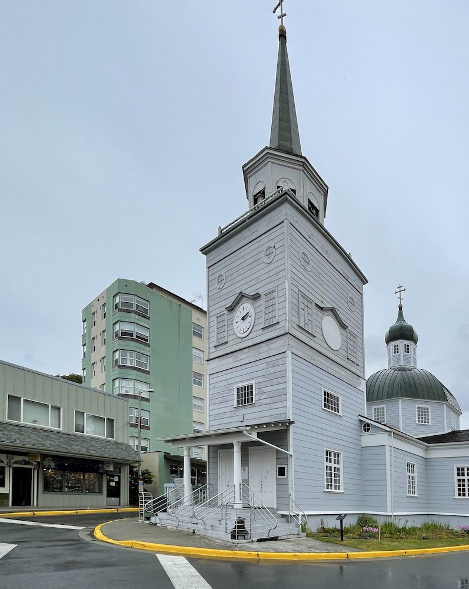
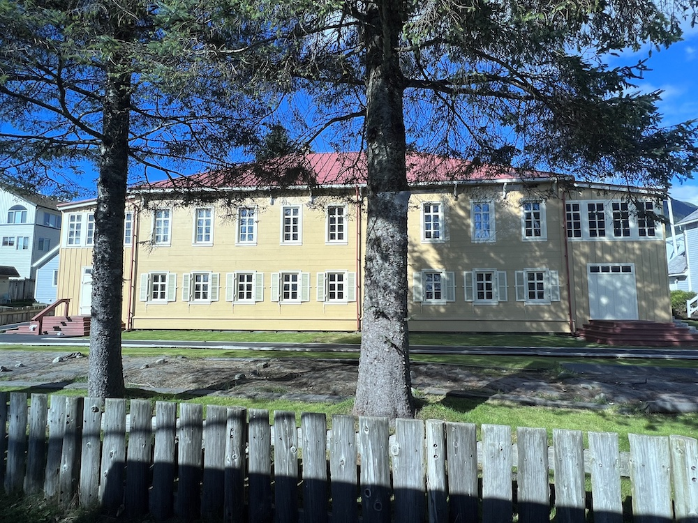
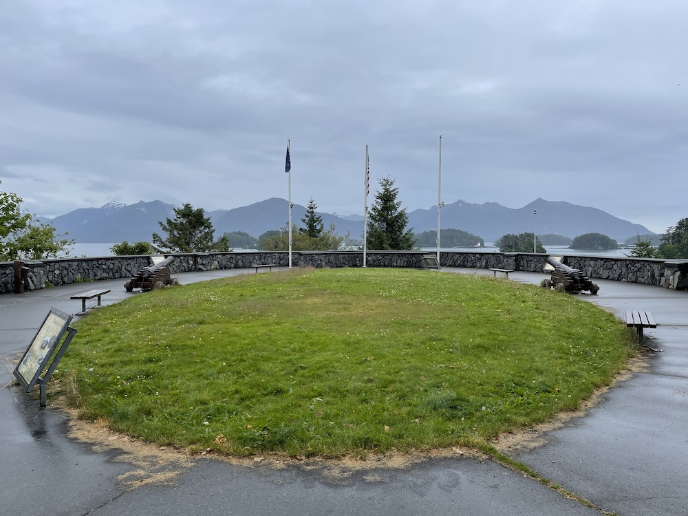
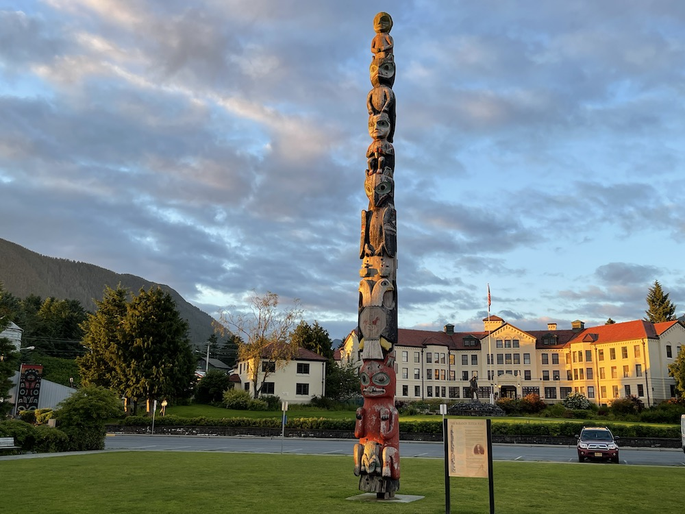
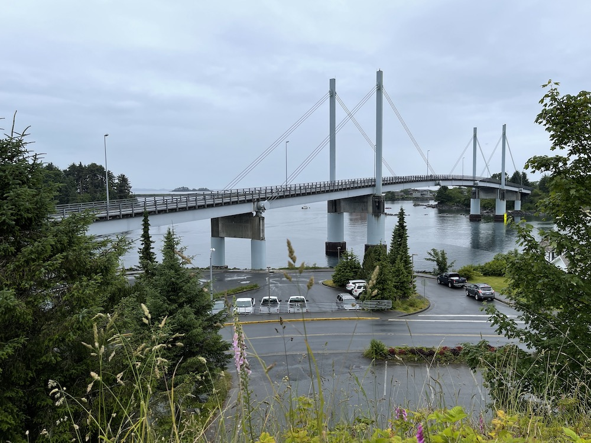
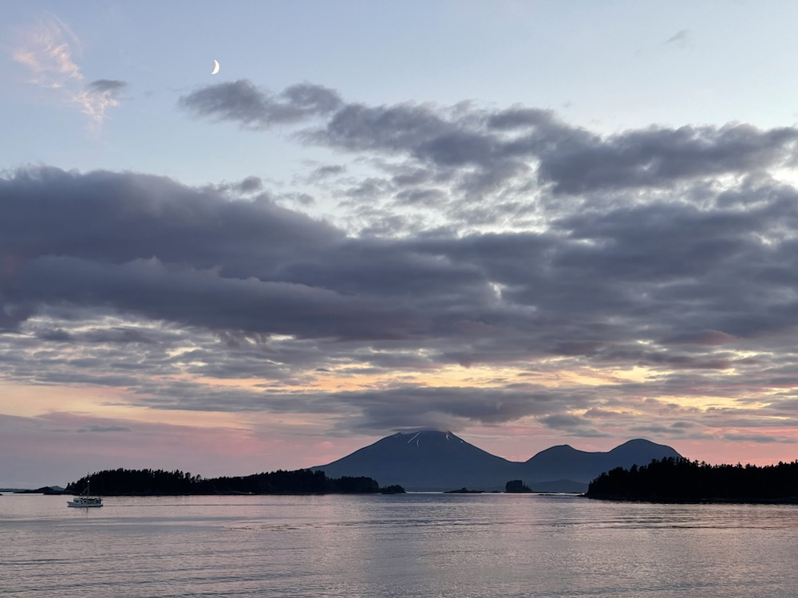

Sitka, Alaska
Sitka is a small city in south-east Alaska that occupies parts of Baranof Island and Chichagof Island. Old Sitka was settled by Russian explorers in 1799. From 1799 to 1867 this Alaskan was part of Russia, and known as New Archangel (Новоaрхангельск). Russian architectural influence is still evident today. Current population is less than 10,000 people, which can double when cruise ships dock and passengers visit Sitka.
St. Michael’s Russian Orthodox Cathedral
The original St. Michael’s Russian Orthodox Cathedral was built in 1848 and was the seat of the Russian Orthodox bishop in Alaska. In 1966 the original cathedral was destroyed by fire, which also destroyed the original library of Russian, Tlingit, and Aluet language texts, handmade bells, and a depiction of the Last Supper. The church has been restored to its original appearance, including the onion dome notable in Russian architecture. St. Michael’s Cathedral occupies the center of one of the two large traffic circles in Sitka.
The Russian Bishop’s House
The Russian Bishop’s House was completed in 1842, prior to the completion of the cathedral. It is an example of colonial Russian architecture. It was closed in 1969 due to disrepair and was in danger of collapse. In 1973 the National Park service took ownership and began restoring the building to how it appeared in 1853. This is one of the four buildings that remain from the time Russian rule in North America. Guided tours are sometimes available. There is a museum on the first floor. It is situated near the east corner of Crescent Harbor.
Castle Hill
The Baranof Castle State Historic Site, commonly referred to as Castle Hill, provides an impressive view overlooking Sitka and the harbor. It is a 60-foot-high rocky outcrop overlooking Sitka Harbor. At the summit is a flat area, approximately 120 by 90 feet. The south face is sheer, but the east side has a more gradual slope with a walking trail that leads to the summit. The top of the hill had been occupied by native Tlingit, then Russia military occupied the hill. After Alaska was purchased by the United States of America, a transfer of power was formalized at Castle Hill and the American flag was raised. Today, the previous structures no longer remain. But cannon is still in place and the view is astounding.
The Sitka Pioneer Home
The Sitka Pioneer Home is an assisted living facility. Where it is located was originally a barracks, first for Russian troops, and then for U.S. Marines. The base was closed in 1912 and the Navy Department gave permission to use the barracks to form the Sitka Pioneer Home. The home opened in 1913 to house indigent men. In the 1930s the old barracks were replaced with a concrete building with a capacity to house 170 men. In the 1950s a new wing was added to house women and married couples. The most recent renovations allow housing for residents suffering from Alzheimer’s disease and related dementia. Currently, the Sitka Pioneer Home is able to serve 65 men and women.
John O’Connell Bridge
The John O’Connell Bridge, also known as the Sitka Harbor Bridge, spans the Sitka Channel to connect the main town of Sitka on Baranof Island to Japonski Island, where Sitka Rocky Gutierrez Airport and the Coast Guard station are located. This two-lane cable-stayed bridge was named for a former mayor of Sitka. Initially competed in 1971. The main span is 450 feet, with a total 1255 foot length. Prior to the completion of the bridge, access was achieved by ferry. It is the oldest cable-stayed bridge in the United States, and was designated an Alaska Historic Civil Engineering Landmark.
Mount Edgecombe on Kruzof Island
Mount Edgecombe on Kruzof Island, visible across the Sitka Sound, is a stratovolcano featuring a well-defined crater. Captain James Cook named Mount Edgecombe in 1778. The volcano is not active or erupting. However, it has been in a state of unrest, including multiple recent earthquake swarms. In early June, 2023, a team of scientists was brought in by helicopter to study carbon dioxide and heat emissions. Their work was initially disrupted by the appearance of a grizzly bear in close proximity to where the first team members were deployed.